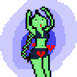

<style>
    /* .circle{
        border: none;
        box-sizing: border-box;
        height: 4rem;
        width: 4rem;
        border-radius: 50% !important;
    }
    .profile{
        display: block;
        @media only screen and (max-width: 600px) {
            display: block;
        }
    } */
</style>
<section class="aboutme">
    <div class="post_content">
        <p>
            <h1>오! 공방</h1> 
            <div style="text-align: justify;">
                그냥 좋아하는거 포스팅하는 블로그 <br><br>
                <a href="https://github.com/atelierO">깃헙</a>
            </div>
            <br>
            <h2>주인장</h2>
            <div>
                
                &nbsp;&nbsp;&nbsp;
                <div class="aboutme-profile">
                    <div><span style="font-weight: bold;">beatheat</span></div>
                    <div>취미로 그림도 그리고 프로그램도 만드는 슬라임</div>
                    <div><a href="https://github.com/beatheat">개인깃헙</a>&nbsp;<a href="https://twitter.com/bituhitu">트위터</a></div>
                </div>
            </div>
        </p>
    </div>
</section>
